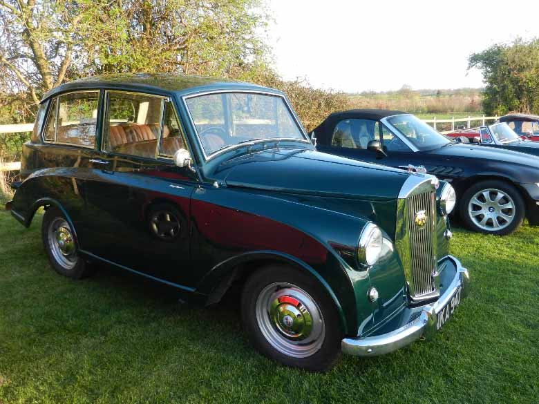

<link href="{{ site.baseurl }}/events/article.css" rel="stylesheet" type="text/css">
<main>
    <article>
        <ol id="breadcrumb">
            <li>
                <a href="{{ site.baseurl }}/">Home</a>
            </li>
            <li>
                <a href="{{ site.baseurl }}/events">Events</a>
            </li>
            <li>
                <a href="{{ site.baseurl }}/events/local">Local</a>
            </li>
            <li>Dog & Gun 2019</li>
        </ol>
        <div id="content">
            <h1>Dog & Gun, Kilby, Leicestershire</h1>
            <h2>10<sup>th</sup> April 2019</h2>
            <p>After a 180 mile round trip south to just north of the M25 to collect some spares for the club I managed to make it back in time to get to the first summer schedule meet just down the road at the Dog & Gun, Kilby, Leics. for a pleasant hour in the late evening sun.</p>
            <p>Paul Burgess (1200)</p>
            <p>Vice Chair, Spares & Regalia Coordinator</p>
            
        </div>
    </article>
    <aside>
        <h2>Members’ cars in attendance</h2>
        <ul class="disableListStyles">
            <li>
                <h3>Paul Burgess</h3>
                <div>
                    <div class="numberPlateMarker">NKA 947</div>
                </div>
            </li>
        </ul>
    </aside>
</main>
